このラボでは、これまで作成したアプリケーションをビルドして、S3 で公開します。

Cloud9 画面を表示して、ターミナルを表示してください。
以下のコマンドを実行してアプリケーションをビルドします。
cd ~/environment/photoapp/web
yarn build
以下のような内容が出力されます。（初回実行時は１～２分かかる可能性があります。）
Compiled successfully.
File sizes after gzip:
199.14 KB (+78 B) build/static/js/main.4c879a13.js
109 B build/static/css/main.65027555.css
～ 略 ～
Done in 25.21s.build ディレクトリが作成され、配信用のファイルが格納されています。
今回はCloud9 の実行環境として、無償で利用可能なt2.micro (vCPU:1、Memory 1GiB) を利用していますが、スペック不足によりBuild 処理でハングする場合があります。
ハングした場合は以下の手順でCloud9 を実行しているEC2 インスタンスを再起動してください。
公開用のS3 バケットを作成して、生成されたファイルをS3 バケット上にアップロードします。以下のコマンドを実行してバケットを作成してください。(<yourname> はご自身の名前に置き換えてください)
cd ~/environment/photoapp/web/build
aws s3 mb s3://devawsome-publish-<yourname> --region us-west-2
以下のように表示されます。
make_bucket: devawsome-publish-<yourname>以下のようなエラーが出たら、バケット名が重複していますので、異なる名前で再度実行してください。
make_bucket failed: s3://devawsome-publish-<yourname> An error occurred (BucketAlreadyExists)S3 バケットにファイルをアップロードします。以下のコマンドを実行してください。(<yourname> はご自身の名前に置き換えてください)
aws s3 sync . s3://devawsome-publish-<yourname> --acl public-read
s3 sync 操作により、該当ディレクトリ内のファイルとS3 バケットが同期されます。また、--acl public-read オプションを付与すると、ファイルがバケットにアップロードされると同時に、パブリックで読み取りアクセス可能な権限が付与されます。
S3 バケットの Static website hosting を有効にします。(<yourname> はご自身の名前に置き換えてください)
aws s3 website s3://devawsome-publish-<yourname> --index-document index.html
以下のURL にブラウザでアクセスすると、アプリケーションにアクセスできます。(<yourname> はご自身の名前に置き換えてください)
http://devawsome-publish-<yourname>.s3-website-us-west-2.amazonaws.com以上で、このラボは終了です。